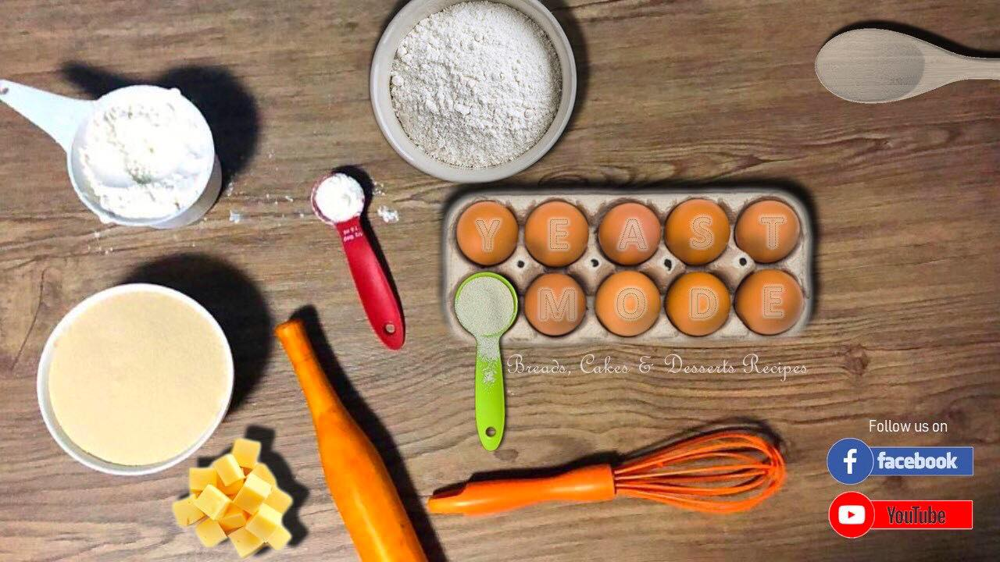
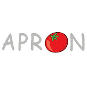

Since I've been baking for so long, I have come across numerous food channels and websites where I research about
different food and look for inspiration for my next creation. Here's a list of the 5 ones that I always go back to
every single time.

Yeast mode is an amazing youtube channel that features loads of recipes that range from siopao to cakes. However,
I usually go to this channel to find inspiration for my bread recipes! When I try to experiment with new breads
and look for recipes online, I have always found that the recipes on this channel always turn out amazing. If you’re
looking for a channel to get new bread recipes from, definitely check yeast mode out:)


Apron is another incredible channel whose bread and dessert recipes are amazing. Aside from the fact that the videos
here are super satisfying, a lot of the recipes that I’ve tried from this channel turn out amazing! Aside from this,
a lot of the recipes that they put up are really unique and interesting, which is another reason why I love this
channel:)